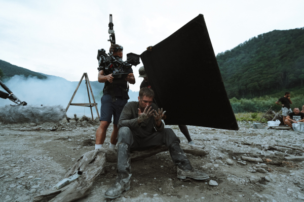
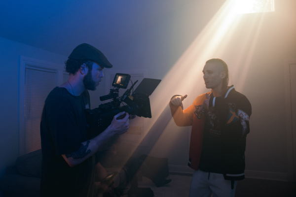

SOBRE MI
Soy un apasionado del cine con más de 10 años de experiencia en la dirección y producción
cinematográfica.
Durante mi carrera he trabajado en diversos roles, desde asistente de dirección hasta director de
producción, lo
que me ha brindado una comprensión profunda de todos los aspectos de la realización
cinematográfica.
Mi
objetivo es seguir contando historias emocionantes y creativas a través de la pantalla, contribuyendo al
arte
del cine y entreteniendo a audiencias de todo el mundo.
EXPERIENCIA
CINE MÁGICO ESTUDIO
- Cargo: Director de Producción
- Fechas: Enero de 2017 - Presente
- Descripción: En Cine Mágico Estudio, lidero la producción de largometrajes de gran
envergadura.
Mi trabajo incluye la supervisión de la logística de producción, gestión de presupuestos, coordinación de equipos y garantizar que los proyectos se completen a tiempo y dentro del presupuesto. He trabajado en producciones notables como "Aventura en la Ciudad," que se estrenó en más de 700 salas de cine, y "Misterio en el Bosque," que recibió elogios por su impactante diseño de producción.

DREAM CINE PRODUCCIONES
- Cargo: Asistente de Director
- Fechas: Marzo de 2013 - Diciembre de 2016
- Descripción: En Dream Cine Producciones, desempeñé un papel fundamental en la realización de películas aclamadas. Trabajé en estrecha colaboración con el director en la creación de guiones, la planificación de la producción y la coordinación del equipo de filmación. Participé en la dirección de películas notables como "El Tesoro Perdido," que obtuvo reconocimiento internacional, y "El Misterio del Tiempo," que se proyectó en festivales de cine de prestigio.

HABILIDADES
- Dirección y Producción Cinematográfica: Liderar equipos creativos y técnicos para llevar a cabo proyectos cinematográficos exitosos.
- Desarrollo de Historias: Creación y desarrollo de narrativas convincentes y originales.
- Edición de Video y Postproducción: Experiencia en el proceso de edición y posproducción para lograr un producto final de alta calidad.
- Diseño de Producción y Escenografía: Colaboración en la creación de mundos visuales únicos que complementen la historia.
- Trabajo en Equipo: Habilidad para trabajar de manera efectiva en un entorno colaborativo.
- Gestión de Proyectos: Experiencia en la gestión de presupuestos, cronogramas y recursos para garantizar el éxito de las producciones.
- Conocimiento de Equipos de Cine: Familiaridad con equipos de cámara, iluminación, sonido y otros equipos técnicos de producción cinematográfica.
- Idiomas: Español(nativo) e Inglés(avanzado)